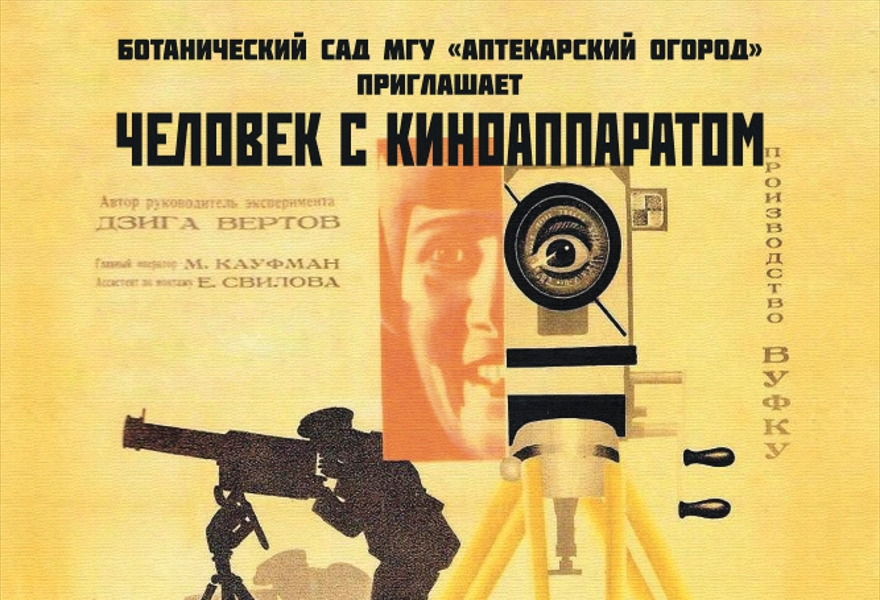
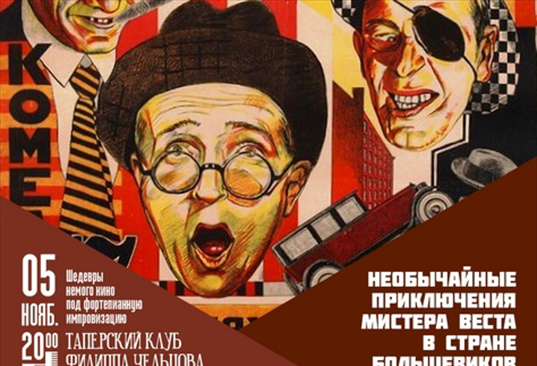

Кино как новое оружие
После Октябрьской революции 1917 года молодая советская власть столкнулась с проблемой: как донести свои идеи до огромной, преимущественно неграмотной страны? Ответ дал Владимир Ленин в своей знаменитой фразе: «Из всех искусств для нас важнейшим является кино».
В 1919 году кинопромышленность была национализирована. Появились знаменитые агитпоезда, которые возили передвижные киноустановки по всей стране, показывая хронику и первые короткометражки.
«Я — глаз. Я глаз механический. Я, машина, показываю вам мир таким, каким только я его могу увидеть»
— Дзига Вертов, манифест «Киноки»
Визуальное наследие
Знаковые картины эпохи

«Мир без границ — через объектив кинокамеры».
Человек с киноаппаратом (1929)
Радикальный эксперимент Дзиги Вертова. Фильм-манифест, в котором нет актеров и сценария, а главным героем становится сам киноаппарат. Вертов виртуозно использует двойную экспозицию, ускоренную съемку и «рваный» монтаж, чтобы показать пульсирующий ритм советского города.

Сатирический ответ западным стереотипам.
Необычайные приключения мистера Веста
Комедия Льва Кулешова, высмеивающая страхи американцев перед «дикими большевиками». Фильм демонстрирует знаменитую «школу Кулешова»: динамичный монтаж, акцент на эксцентрике и трюках. Это не только пропаганда, но и блестящий пример раннего советского боевика и сатиры.